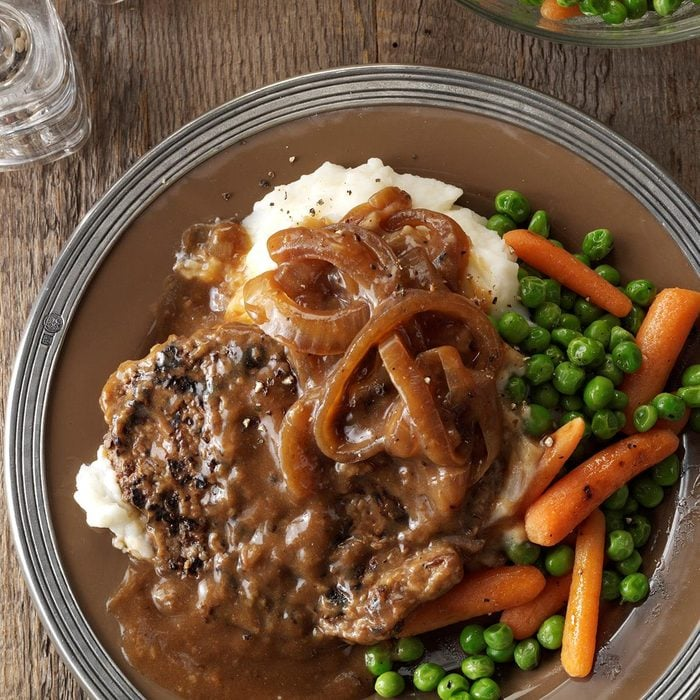
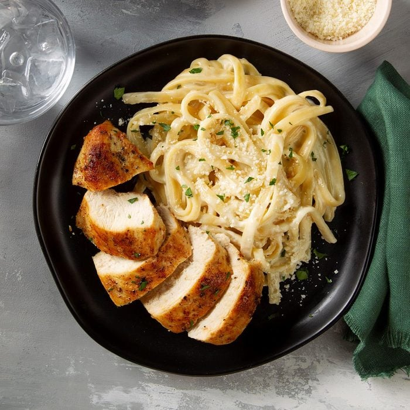

1 (3 ounce) package ramen noodles, any flavor, with seasoning packet
2 cups water
2 tablespoons butter
1/4 cup milk
Directions
Bring water to boil in a small sauce pan.
Add dried noodles and cook 3 minutes, or until noodles are tender. Stir occasionally.
Drain away water. Return noodles to sauce pan.
Add butter, milk and contents of seasoning packet.
If your tastes desire, you may not use all of the seasoning packet.
Heat on low heat and stir until butter is melted and noodles are coated with creamy sauce.
Serve.
Cube Steaks

Ingredient
1/3 cup all-purpose flour
6 beef cube steaks (4 ounces each)
1 tablespoon canola oil
1 large onion, sliced and separated into rings
3 cups water, divided
1 envelope brown gravy mix
1 envelope mushroom gravy mix
1 envelope onion gravy mix
Hot mashed potatoes or cooked noodles
Directions
Place flour in shallow dish. Add steaks, 1 or 2 at a time, and turn to coat completely.
In a skillet, cook steaks in oil until lightly browned on each side. Transfer to a 3-qt. slow cooker.
Add the onion and 2 cups water.
Cover and cook on low for 8 hours or until meat is tender.
In a bowl, whisk together gravy mixes with remaining water. Add to slow cooker; cook 30 minutes longer.
Serve over mashed potatoes or noodles.
Serve.
Easy Alfredo

Ingredient
4 ounces uncooked fettuccine
3 tablespoons butter
1 garlic clove, minced
1 cup heavy whipping cream
1/4 cup plus 2 tablespoons grated
ParmigianoReggiano cheese, divided
1/4 cup grated Romano cheese
1/8 teaspoon salt
Dash ground black pepper
Dash ground nutmeg
Minced fresh parsley, optional
Directions
Cook the fettuccine in seasoned pasta water according to the directions for al dente.
In a large saute pan, melt the butter over medium heat. Add the minced garlic and cook until it’s fragrant, about 1 minute.
Then, slowly add the heavy cream, whisking constantly as you pour until all the cream is incorporated.
Bring the mixture up to a gentle simmer and let it cook for 3 to 4 minutes, until it begins to thicken.
Remove the pan from the heat. Add a handful of the Parmesan and Romano cheese at a time, whisking to incorporate the first handful before adding the next.
When all the cheese is added, return the pan to the stovetop. Simmer the sauce gently over low heat for 3 to 4 minutes, until it’s thick enough to coat the back of a spoon.
Season the sauce with salt, black pepper and nutmeg. Add the drained fettuccine to the pan and toss it with the sauce.
Portion the pasta into individual bowls and top them with the remaining Parmesan cheese and parsley, if using.